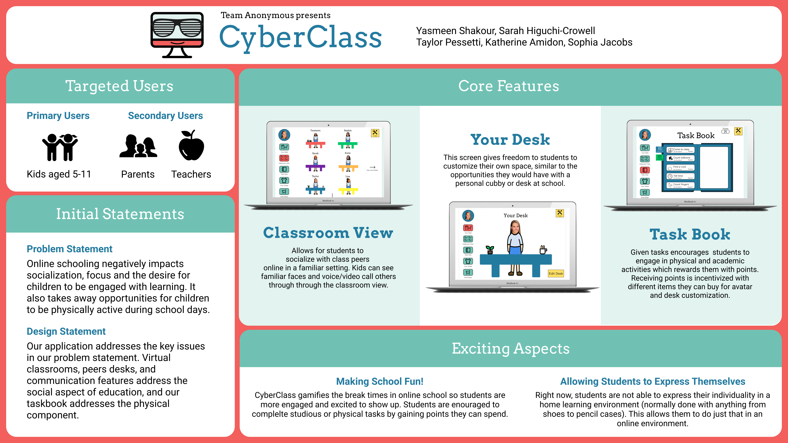

Cyberclass Desktop Application Design
Timeline: 3 months
Role: UX Designer
Tools: Figma, Miro, Paper Sketches
Project description: I was part of a team that created a mockup for a classroom application meant for children to use during remote learning. This application concept included some UX Research and a detailed UX Design process.
Overview
I spent a semester during my undergraduate degree working with a team of other UX Design students to create Cyberclass, a desktop application meant for elementary aged students. Our task was to create an experience that is useful for a particular stakeholder group during the COVID-19 pandemic. Cyberclass is meant to assist young students in interaction with other students and to provide fun in the classroom while learning remotely. Our design features a prototype featuring key interactions as well as hi-fi screens with designs that were created by the entire team.
Design Problem Statement
Our first step as a team was to brainstorm how we wanted to outline our original problem statement. We had to define who our target market was, the interaction design problem we were trying to solve, and information about our users, which included: important activities they need to accomplish, what is currently being done to meet their needs, a description of the essential functions our design would need to support, and more. This was meant to be a tentative outline of the project and was not meant to be our ending problem statement - it was just where we started our ideas.
Competitive Analysis
Our group was challenged with comparing our potential product to three services that were already in existence. Since we only got two hours for this assignment, this competitive analysis is a short one and would have been much more extensive for a larger project. This was the extent of our analysis:
Duolingo
Duolingo is an online platform where anyone can begin to learn new languages. Students and adults all over the world use the app for their jobs, travel, cultural enrichment, and more. This platform inspired us mainly because of its achievements and xp point features, as well as its notifications. We would like to include feathers similar to these in our interface because they allow students to stay motivated by setting checkpoints and goals for them to meet. However, Duolingo does not include a social aspect, in which you could socialize with other members of the platform by adding “friends” and receiving a feed about their progress. This is something that we added into our platform in order to make it more collaborative amongst students.
Coolmath Games
Coolmath is an online platform geared towards kids that offers websites for playing different types of games, as well as math lessons. Coolmath serves as an indirect competitor to our idea because this service provides an online tool for both learning and fun, which helps kids stay focused. Also, this site has traditionally been used in a classroom setting for motivating kids to complete tasks in school and using the site with games as a reward. Because this is an older method of keeping kids focused and motivated, we classified Coolmath as an indirect competitor. We were inspired by this platform because it's one some of us are familiar with and have used as children in school. Also, the aspect of using interactive games where kids can compare scores and rankings interested us in terms of how we can apply this to our own product.
Apple Watch
One key example of an inspiring analogous competitor from a different industry is the Apple Watch. Personal fitness is something that can be done individually (like studying or learning alone), or in a group or team (like learning in a traditional classroom). The coronavirus pandemic has reduced activity that can be done in a group or individual format to solely individual activity (working out alone, learning from home). The Apple Watch provides a physical piece of technology that can both mentally stimulate the user and provide a social component to maintaining a healthy lifestyle. This is very similar to how our product would serve to engage children and increase the social aspect of online learning. The Apple Watch is an extension of the user's smartphone, much like our service would be an extension of a student's online learning tools.
Interviews
After determining that our users would be students between the ages of 5-11, their parents, and their teachers, we chose to interview all three user groups. With COVID-19 precautions in place, we chose to conduct these interviews over Zoom calls with connections we had in our personal lives who fit in these categories. Each member of my five person group interviewed three participants (or pairs of participants if they were interviewing children and parents). Personally, I interviewed three sets of children and parents with the following questions:
For the students
- What was your school schedule like last year, before you went online?
- What is your school schedule like now?
- What are the biggest differences between how you do school now and how you did it before?
- How do you feel about doing school online? Do you miss anything about having school in person?
- What do you use to do school online? What's that like?
- How many friends did you have at school when it was in person?
- Can you still talk to those friends during online school?
- Do you get to see your friends from school? How often?
- How easy is it for you to make new friends at school right now?
For the parents
- What sorts of apps and web services do your children already use? Do they have to use them when you/re around, or can they navigate them on their own?
- Did your children have experience using technology without your help? For example, having a website they go on or an app on an iPad?
- What is the online school structure?
- What systems is the school using?
- How many people in your household are remotely connected/working/studying from home? What has that been like?
- What are the biggest differences you've noticed between how your child did school before and how they do it now? How do you feel about that?
Personas and Scenarios
In the next step of our design process, we had to create personas and scenarios based on our interviewees and the data we collected from those interviews. In this specific part of the assignment, I was only responsible for creating one persona and helping to write the scenarios. We tried to cover each of our target customer segments with these personas and scenarios, representing students, parents, and teachers.
Sketches and Storyboards
In order to brainstorm ideas for our final design, each team member was told to come up with 32 design ideas each in an hour and a half discussion section. These designs were meant to be anything and everything, whether they were realistic or not, that could inspire us for actual ideas for our designs. After looking at all of our rushed sketches, we chose two to make into storyboards to provide a visual narrative of our sketches.


User Flow Diagram
In the next step of our design process, we made a user flow diagram in order to begin a visual map of how the site layout would flow. We included our main site functions and pages in this design and it allowed us to determine which interactions would be most important and where these interactions would take place.
Paper Prototyping
Each member of the group sketched out different parts of what we wanted the interface to look like and provided a video with user interactions. This video includes tasks that a user would complete while using out design and it involved both large and small interactions.
Usability Inspection Report
In order to determine which aspects of our paper prototypes needed to be improved, our group conducted usability inspection reports. We met with people we had contact with (because of COVID) and asked them to perform certain tasks using our paper prototypes. This allowed our group to see which aspects of the design we needed to fix before our wireframes. Since I was in quarantine and only had access to my sister, I was only able to conduct one report for the paper prototype.
Wireframes
Each member of the group sketched out different parts of what we wanted the interface to look like and provided a video with user interactions. This video includes tasks that a user would complete while using out design and it involved both large and small interactions.
Digital Prototype 1.0
For the first version of our digital prototype, we used Figma to map out the screens and the interactions. In our example video, we included some of the important interactions that users would utilize on the interface. We created this video to follow a path that represents one that a user could follow. This was only when we had some of the screens designed. A full version of the applicaiton design was made later.
Final Digital Prototype
For the first version of our digital prototype, we used Figma to map out the screens and the interactions. In our example video, we included some of the important interactions that users would utilize on the interface. We created this video to follow a path that represents one that a user could follow. This was only when we had some of the screens designed. A full version of the applicaiton design was made later.